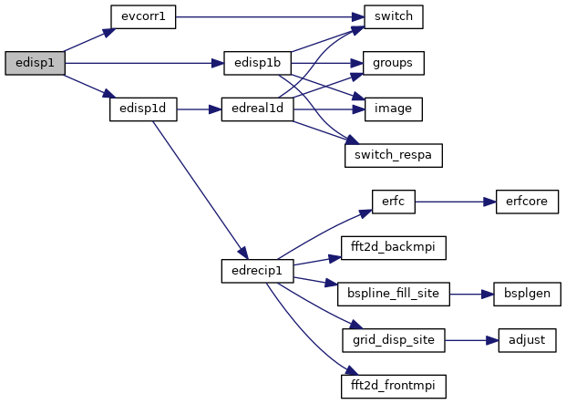
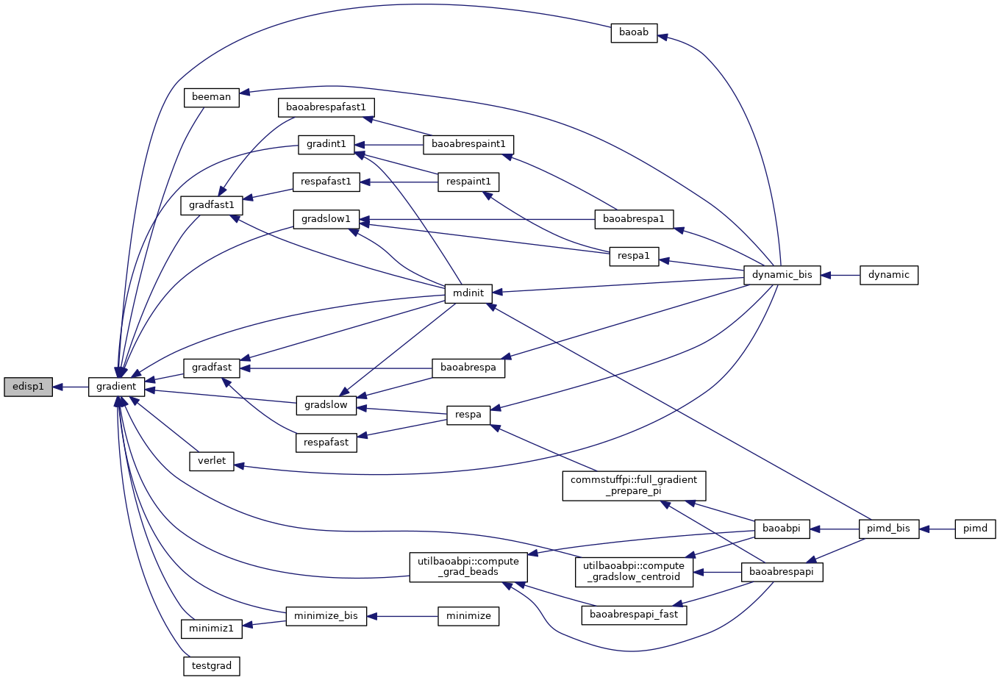
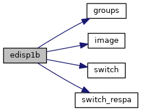
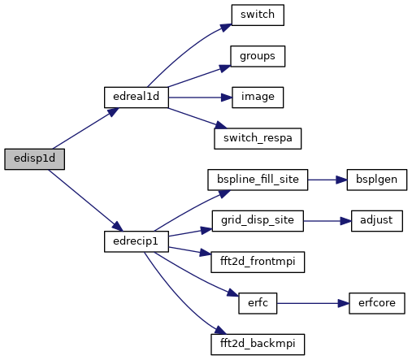
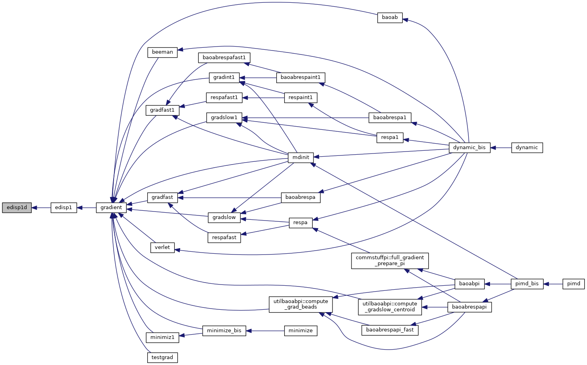
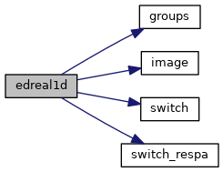
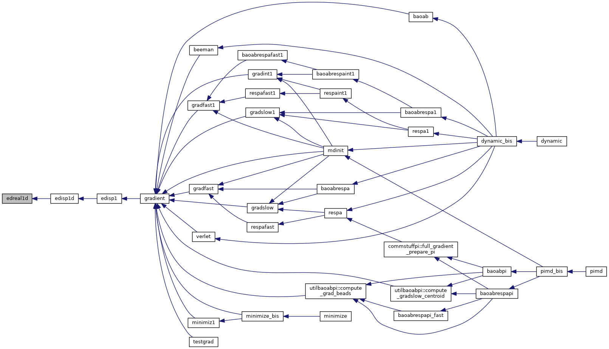
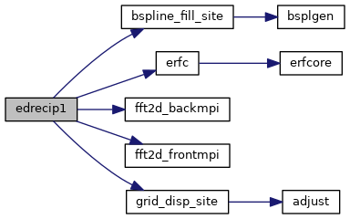

|
Tinker-HP v1.3
|
|
Tinker-HP v1.3
|
Go to the source code of this file.
Functions/Subroutines | |
| subroutine | edisp1 |
| calculates the damped dispersion energy and first derivatives with respect to Cartesian coordinates More... | |
| subroutine | edisp1b |
| calculates the damped dispersion energy and derivatives with respect to Cartesian coordinates using a pairwise neighbor list More... | |
| subroutine | edisp1d |
| calculates the damped dispersion energy and derivatives with respect to Cartesian coordinates using particle mesh Ewald summation and a neighbor list More... | |
| subroutine | edreal1d |
| evaluates the real space portion of the Ewald summation energy and gradient due to damped dispersion interactions via a neighbor list More... | |
| subroutine | edrecip1 |
| evaluates the reciprocal space portion of particle mesh Ewald energy and gradient due to damped dispersion More... | |
| subroutine edisp1 | ( | ) |
calculates the damped dispersion energy and first derivatives with respect to Cartesian coordinates
| no | params |
Definition at line 28 of file edisp1.f90.
References edisp1b(), edisp1d(), and evcorr1().
Referenced by gradient().


| subroutine edisp1b | ( | ) |
calculates the damped dispersion energy and derivatives with respect to Cartesian coordinates using a pairwise neighbor list
| no | params |
Definition at line 82 of file edisp1.f90.
References groups(), image(), switch(), and switch_respa().
Referenced by edisp1().

| subroutine edisp1d | ( | ) |
calculates the damped dispersion energy and derivatives with respect to Cartesian coordinates using particle mesh Ewald summation and a neighbor list
| no | params |
Definition at line 445 of file edisp1.f90.
References edreal1d(), and edrecip1().
Referenced by edisp1().


| subroutine edreal1d | ( | ) |
evaluates the real space portion of the Ewald summation energy and gradient due to damped dispersion interactions via a neighbor list
| no | params |
Definition at line 519 of file edisp1.f90.
References groups(), image(), switch(), and switch_respa().
Referenced by edisp1d().


| subroutine edrecip1 | ( | ) |
evaluates the reciprocal space portion of particle mesh Ewald energy and gradient due to damped dispersion
| no | params |
Definition at line 851 of file edisp1.f90.
References bspline_fill_site(), erfc(), fft2d_backmpi(), fft2d_frontmpi(), and grid_disp_site().
Referenced by edisp1d().

 1.8.5
1.8.5